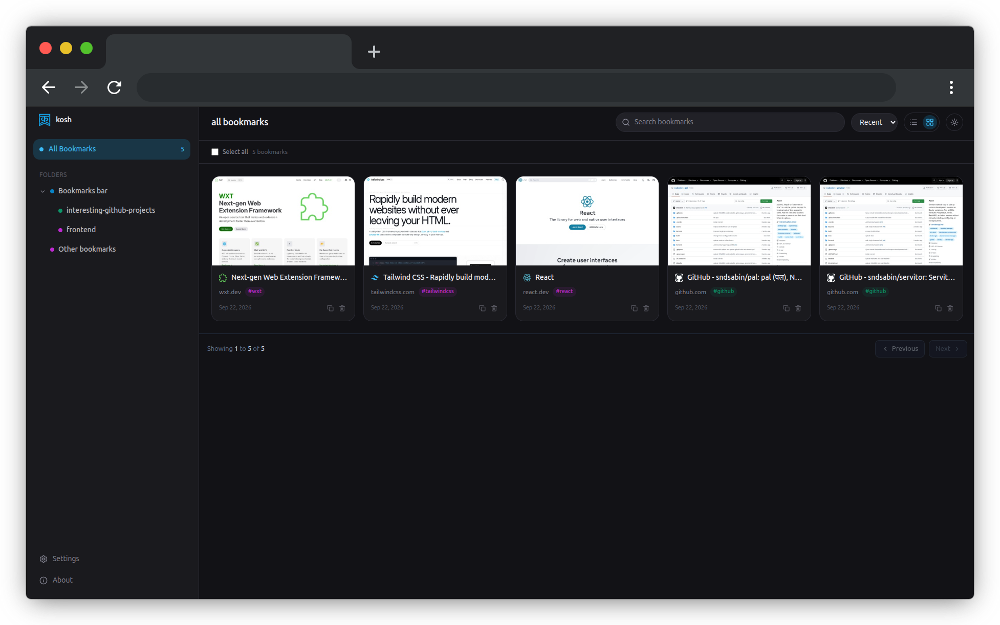

कोष / noun — collection, treasury, repository
Bookmarks, done right.
kosh is a bookmark manager that lives inside your browser. It saves, tags and organizes what you already have. No import, no separate account, no new place for your links to get lost.
GPL-3.0 licensed, built in the open.

What it actually does
Small, deliberate jobs, done well, and nothing more.
- Native bookmarks
- Reads and writes the bookmarks your browser already stores. Uninstall kosh and your bookmarks are untouched, nothing was ever migrated away from you.
- Search that keeps up
- Type a few letters of a title, a tag or a URL and the right page is there, even across a collection with thousands of links.
- Export, anytime
- Download your whole collection as a standard bookmarks HTML file whenever you like. Nothing here is locked in.
Every permission, accounted for
kosh asks for exactly three things, and here's what each one is for.
| permission | what it's used for |
|---|---|
| bookmarks | Read and modify your browser bookmarks and folders — this is the core of the app. |
| storage | Store extension-specific settings and state, like your view preferences. |
| downloads | Let you export your bookmarks as an HTML file. |
kosh (कोष)